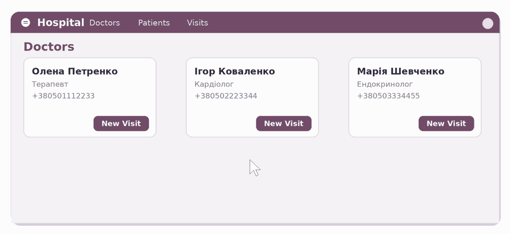
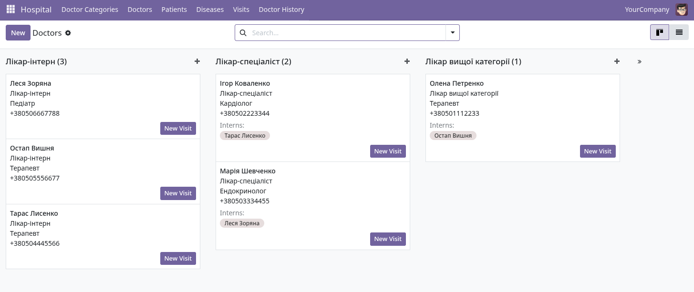
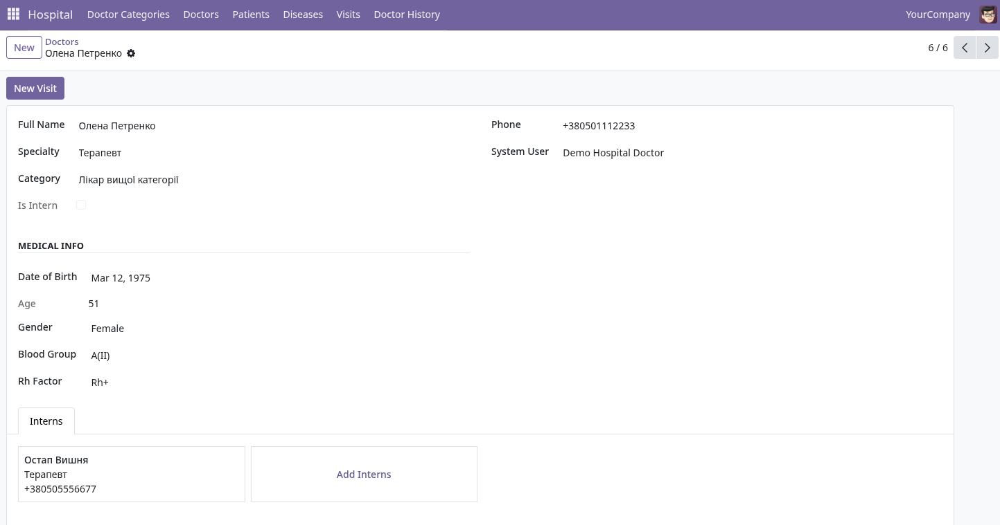
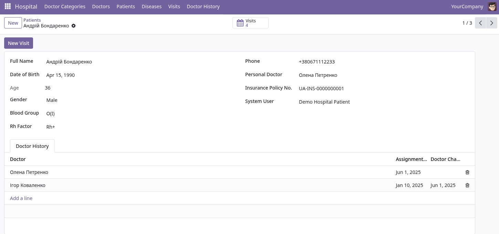
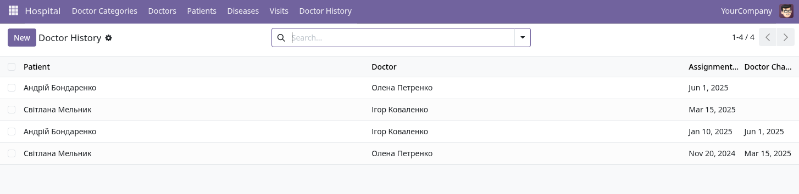
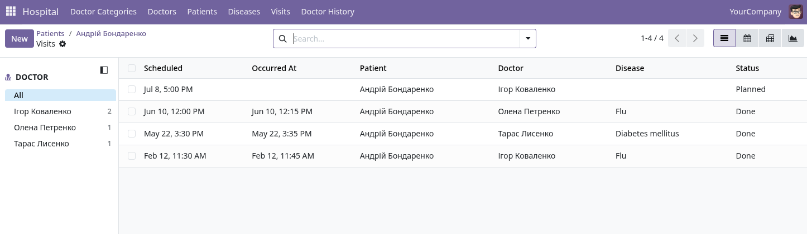
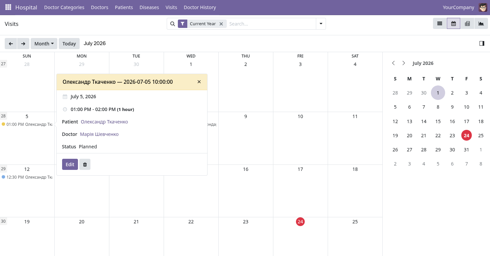
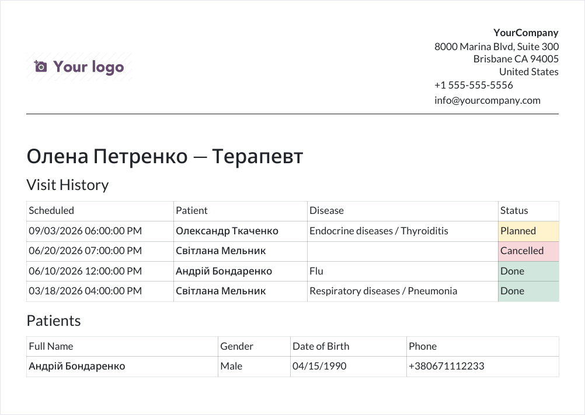

Run your clinic from a single place — doctors, interns, patients, diseases and visits, with role-based access control and print-ready PDF reports. Built natively for Odoo 19.
|
Clinical records
Doctors, interns and patients with medical info, personal doctor history and quick visit creation. |
Secure by role
Five inherited security roles with record-level rules — every user sees exactly what they should. |
Ready to print
A per-doctor PDF report and a disease report wizard — formatted, color-coded and A4-ready. |
HR Hospital brings the core of a hospital's daily workflow into Odoo: keeping doctor and patient records, tracking who treats whom, scheduling and closing visits, and classifying diseases. Mentorship between doctors and interns is a first-class concept, and access to sensitive visit data is governed by a clear, hierarchical permission model. When it's time to report, the module produces clean, print-ready PDFs out of the box.
Organise your medical staff by qualification category. Each mentor sees the interns they supervise, and a visit can be started straight from a doctor's card.

Kanban grouped by category, with mentor → intern tags and one-click New Visit.

Doctor form: specialty, category, medical info and the interns managed by this mentor.
Every patient carries their medical info, personal doctor and a full history of doctor changes — plus a visit counter that jumps straight to their appointments.

Patient form with personal doctor, insurance, medical info and the doctor-change history.

Doctor history log — who treated whom, and when each assignment changed.
Track visits through their lifecycle — planned → done → cancelled — with completed visits protected from accidental edits. Browse them as a list, filtered by doctor and disease, or on a calendar.

Visits list with a doctor side panel, disease column and status.

The same visits on a calendar, with quick details on click.
Roles inherit each other — each level adds to the one below, so permissions stay simple and predictable.
| Role | Access to visits |
|---|---|
| Patient | Reads only their own visits |
| Intern | Reads and edits their own visits |
| Doctor | Own visits plus the visits of mentored interns |
| Manager | Sees all visits |
| Administrator | May delete any module data |
Patients are linked to their portal account through the System User field, so a patient logging in sees their own visit history and nothing else.
Print a complete report for any doctor — single record or in batch, one doctor per A4 page. It carries a company header, the doctor's visit history with color-coded statuses, the patient list, and a footer with the print timestamp and company city. A separate disease report wizard filters visits by doctor, disease and period and can export them grouped by disease.

Sample doctor PDF report — header, visit history (Planned / Done / Cancelled), and the patient table.
Demo data is optional: install with demo data to get a ready-made clinic with doctors, interns, patients, diseases and visits to explore.
| Odoo version | 19.0 |
| License | LGPL-3 |
| Price | Free |
| Dependencies | base, web |
| Languages | English, Ukrainian |
| Tested | Full automated test suite, clean install with demo data |
hr.hospital.doctor — doctors and interns, with mentor relationshr.hospital.patient — patients, personal doctor and visit counterhr.hospital.visit — visits with status workflow and diagnosishr.hospital.disease — hierarchical disease classifierhr.hospital.doctor.history — log of personal doctor changesQuestions, bug reports and feature requests are welcome. The module is maintained on GitHub and issues are answered by the author.
| Author | Vitalii Sorokolit |
| support@example.com | |
| Repository | github.com/NutrixV/edu_odoo_hr_hospital_addon |
| Response time | Usually within a few working days |
Developed by Vitalii Sorokolit
Support: support@example.com — or open an issue on GitHub.